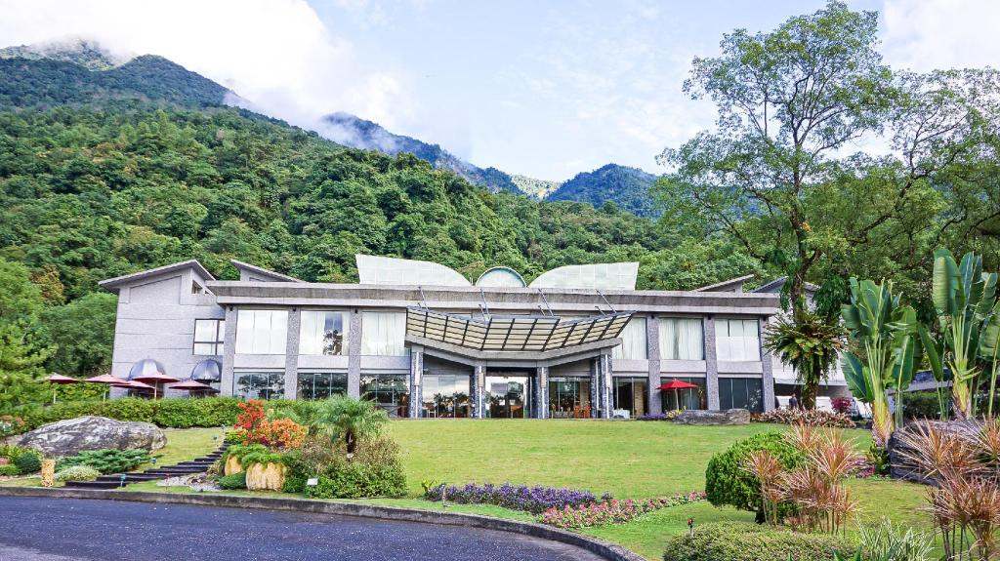
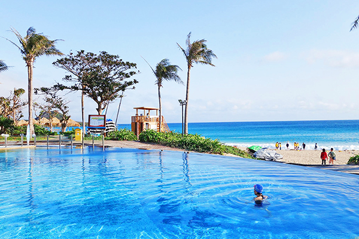
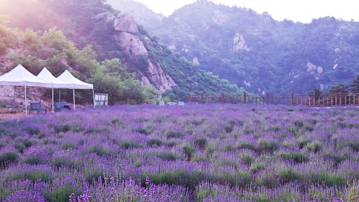

蝴蝶谷
 蝴蝶谷因合適的氣候及地形，孕育了數十種蝴蝶，每年5月至8月是最佳賞蝶季節。
蝴蝶谷還是賞螢聖地，每年3月下旬至5月上旬更是賞螢熱門景點，每當夜幕低垂，螢火蟲穿梭在步道林間，彷彿銀河般燦爛。
園區內擁有碳酸氫鈉泉以及碳酸鹽泉，是全國獨一無二的雙溫泉泉質，即使不是住客，也能購票入園享受。
鹿野高台
國際熱氣球嘉年華吸引來自世界各地的旅人前來參加熱氣球繫留體驗以及熱氣球自由飛行表演。
絢麗燦爛的光雕音樂會，或是曙光光雕音樂會等活動，讓人永生難忘。
藍天下的鳥居與神社拍起來好漂亮，
走進鳥居，白色的步道直通鹿野神社的木造本殿。
本殿前還有兩座石燈籠，站這取景，畫面也很有美感。
夏都酒店
一直線的建築分別為：普羅、馬貝雅及波西塔諾三個館別，襯著碧海藍天、欖仁樹蔭與椰林白浪，處處洋溢著悠閒又熱情的浪漫風采。
炎日下的沙礫，透出一絲絲熱氣，抬眼望去，似乎腳下這片黃沙都飄著一種淡淡且延續著的熱波。
墾丁除了白砂灣之外，墾丁大街也是著名的觀光景點之一。
坐落在屏東恆春的墾丁大街，因為南台灣的終年好天氣與美麗沙灘而成為觀光客的度假勝地。
奇美博物館
動物廳裡面展出大象、犀牛、北極熊⋯等大大小小的動物標本與化石，透過生命演化的長廊、飛翔的世界等去見證生命的奧妙。
樂器廳裡展出來自各國最早製琴師製作的小提琴，並收藏了多把世界名琴。喜歡樂器的話，這裏絕對是必逛的內容。
間歇噴出的噴泉則增添了阿波羅與海神們磅礴登場的氣勢，加上奧林帕斯橋彼岸博物館典雅交相輝映的光影，這一幕真是令人流連忘返。
薰衣草森林
 那樣原始、擁抱森林初始氣息的步道，讓沉澱地思緒尋覓安靜的落腳處，就在眼前。
融合了熱帶植物及台灣原生植物的英國式花園。內有梅花、櫻花、油桐、杉樹及樹上的各種鳥屋，花園旁設置有咖啡座。
由專業的農夫，辛勤澆水施肥修剪維護，在11月至隔年5月是薰衣草盛開的季節，以冬天1-2月最盛開。夏天經過梅雨和颱風的天候，粉萼鼠尾草代替薰衣草的美麗。